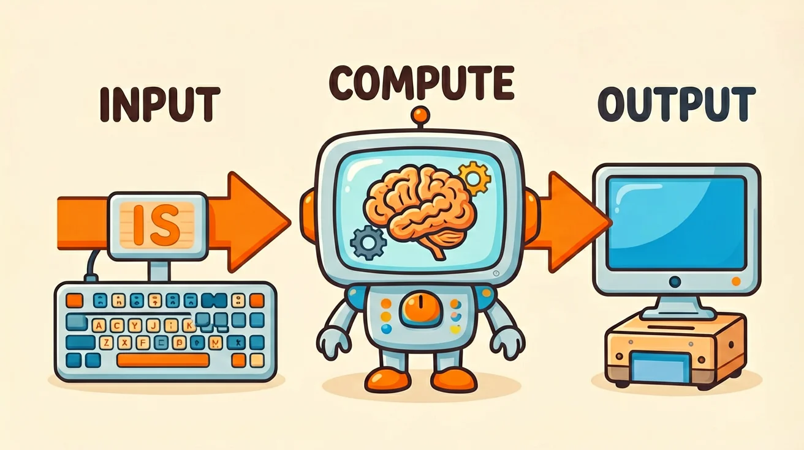
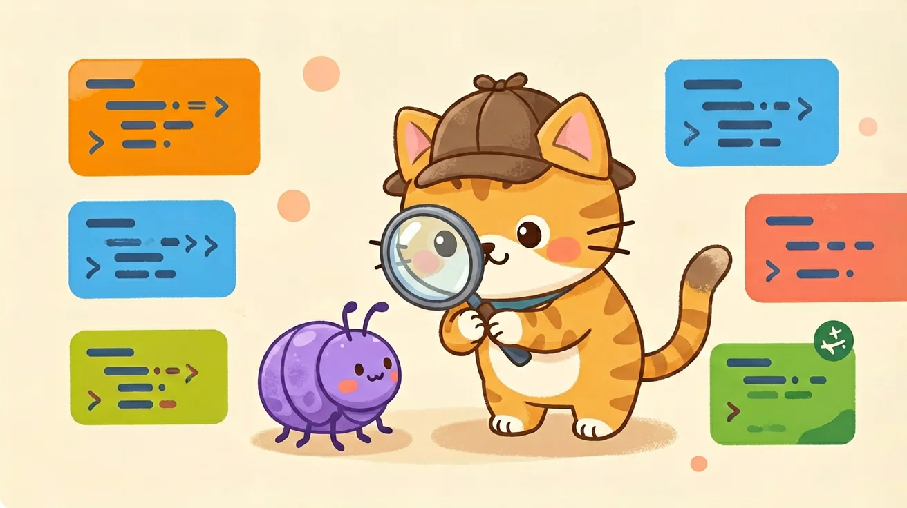
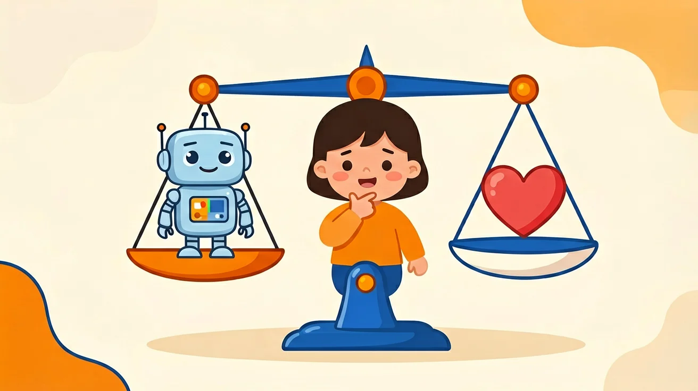
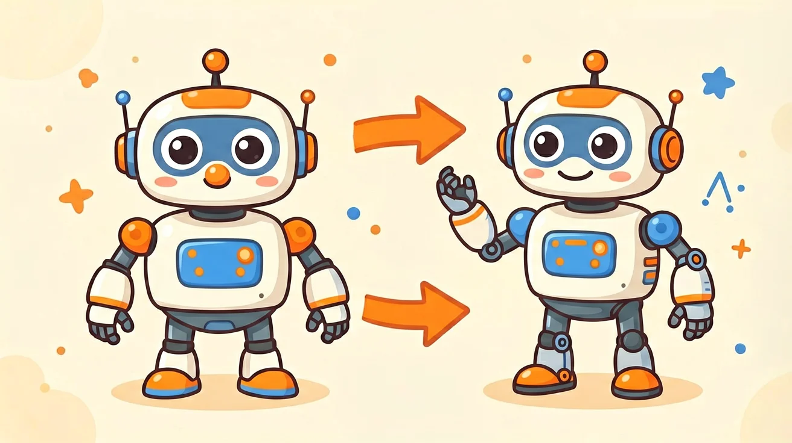
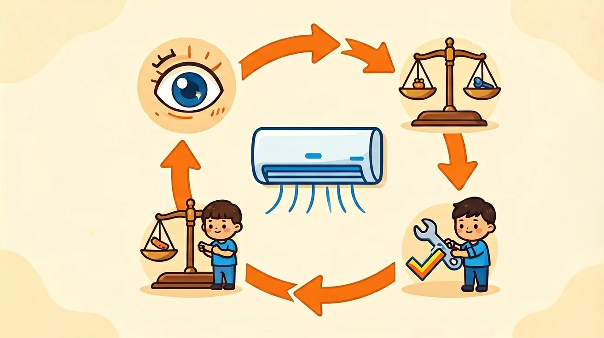

第 9 单元
输入-计算-输出模型
所有计算机都按同一模型工作：输入接收信息、计算加工处理、输出送出结果。

第 10 单元
程序调试与迭代
Bug 是程序里的错误；调试三步法：观察→猜想→试改；迭代让程序越来越好。
第 11 单元
互联网服务与应用
远方服务器帮我们办事；客户端提请求，服务器给结果；数据存在服务器上。
第 12 单元
网络安全与信息保护
识别网络陷阱；设计强密码；保护个人信息；遇可疑情况会求助。
第 13 单元
人工智能初识
AI 通过学习大量数据变聪明；语音识别、图像识别、智能推荐就在身边。

第 14 单元
人工智能伦理与责任
认识 AI 带来的隐私、偏见、抄袭、依赖问题；学会负责任地使用 AI。

第 15 单元
传感与执行
传感器是设备的五官，执行器是设备的手脚，处理器是大脑——三件套配合工作。

第 16 单元
反馈控制原理
看结果、比目标、调动作，循环往复；闭环比开环更聪明、更准确。